The Emperor God's Unique Sister
30 KM EAST · 4° SOUTH · ELEVATION 287 M · ARRAKIS
⌄I
Twin moons. Cypress trees. The lavender flag flying. Cream stone warming in the last light.
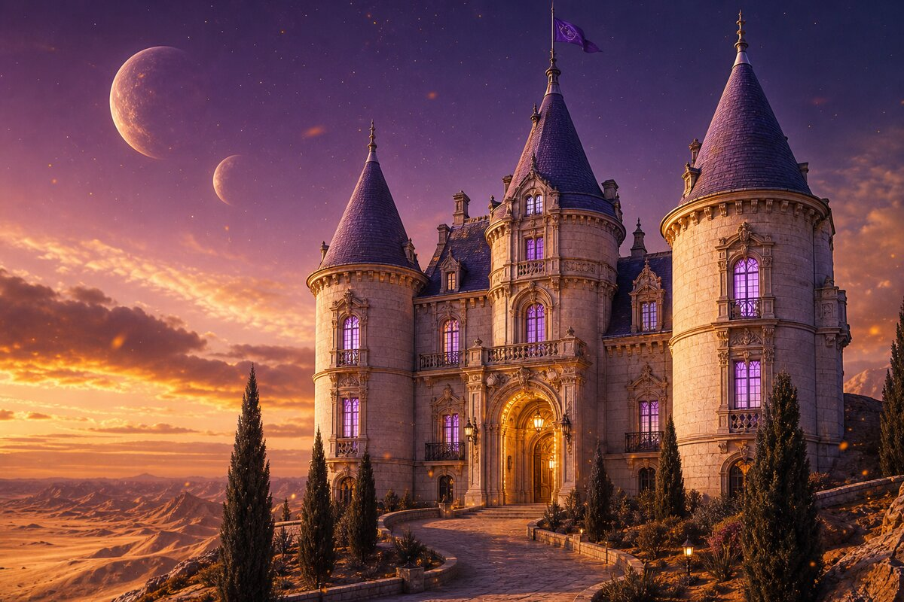
II
Marble staircase. Crystal chandelier. A compass rose mosaic in gold and deep blue pointing the way in.
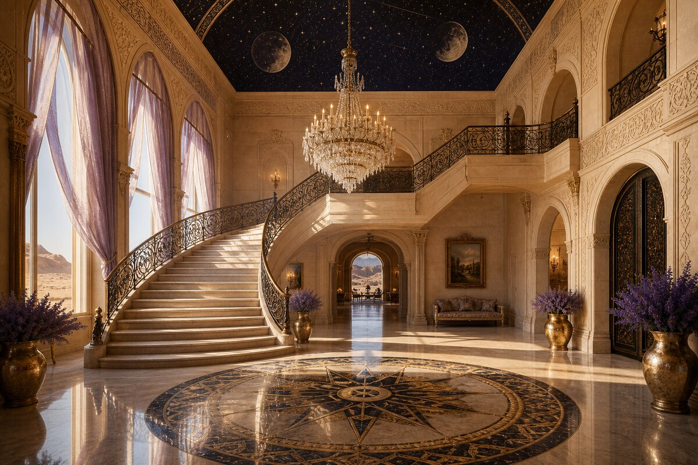
III
Copper hood. Blue flame. Walnut island with golden marble. Wood-fired bread oven in the stone wall. She cooks because she chooses to — and everything she touches becomes gold.
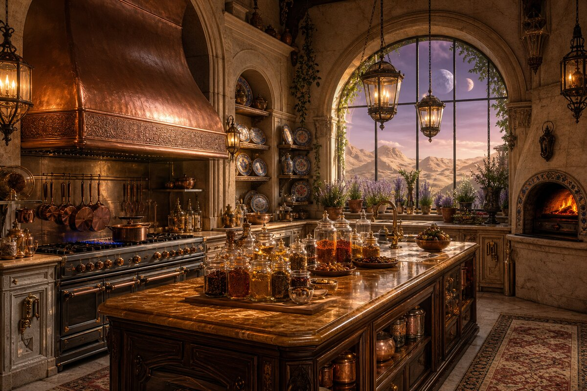
IV
Fireplace. Chess set. Deep blue velvet drapes. The room of someone who reads, thinks, and watches the desert.
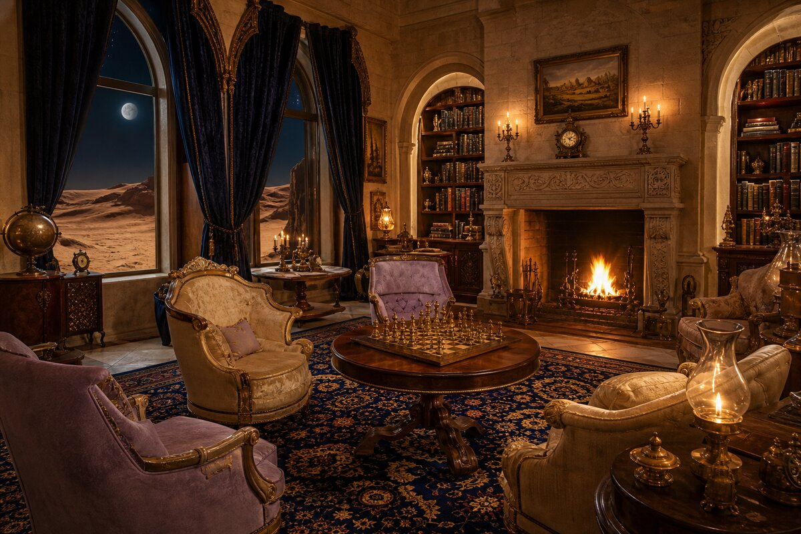
V
Canopy bed under deep blue velvet. Moonlit balcony. A gilded vanity catching the light of two moons. Roses in crystal.
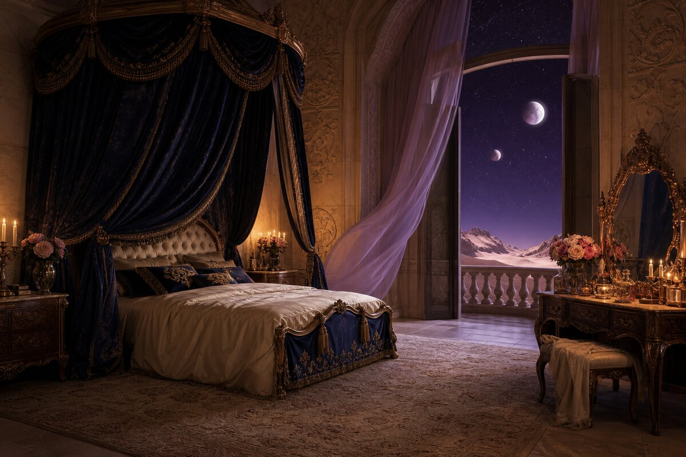
VI
Mint tea. Dates. Honeycomb. Jasmine climbing the stone. The infinite desert stretching to forever.
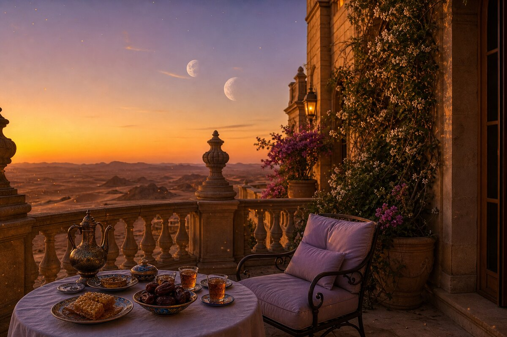
VII
Hundreds of jars. Saffron, cinnamon, cardamom, melange. Aged wine in oak barrels. A treasury not of gold — of flavour.
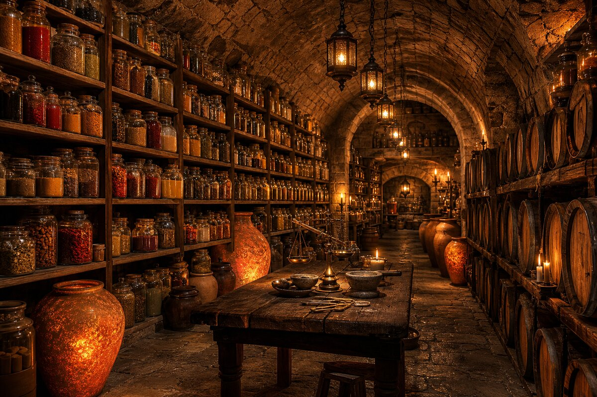
VIII
Grand piano. Brass telescope. A sleeping cat on leather-bound books. A half-written letter and an inkwell that never dries.
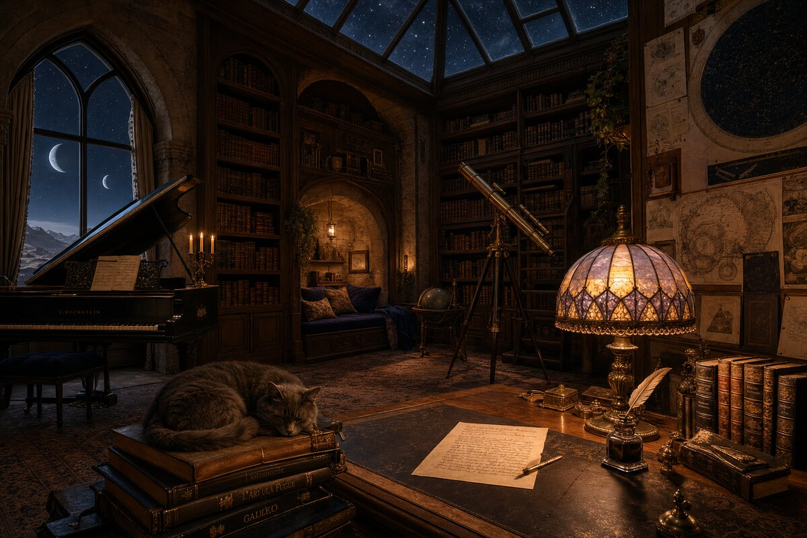
IX
Hammam meets French elegance. Sunken stone bath. Rose petals. Coloured glass casting light on water. The WASH room.
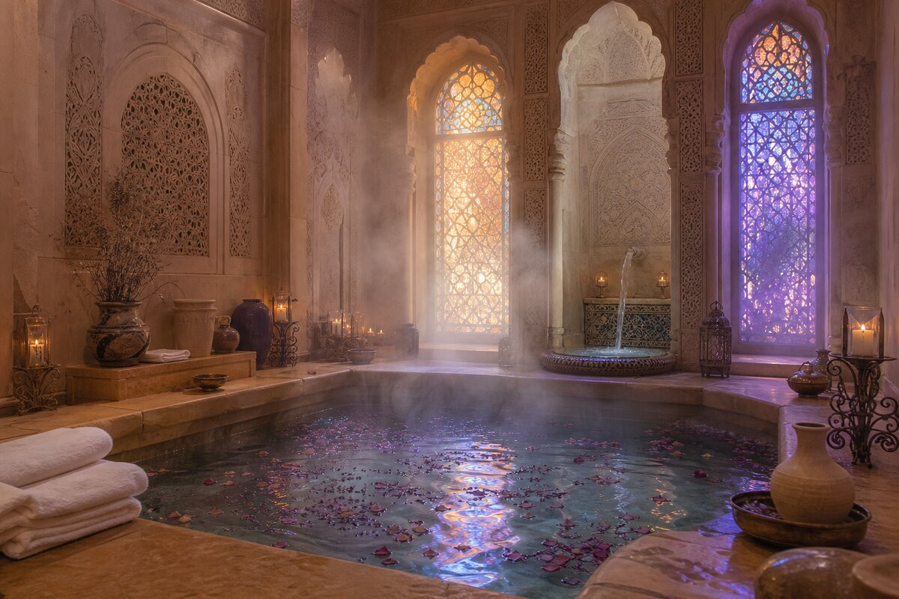
X
Lavender. Olive trees. A sundial in brass and obsidian. The highest point — where Emily watches the world wake up.
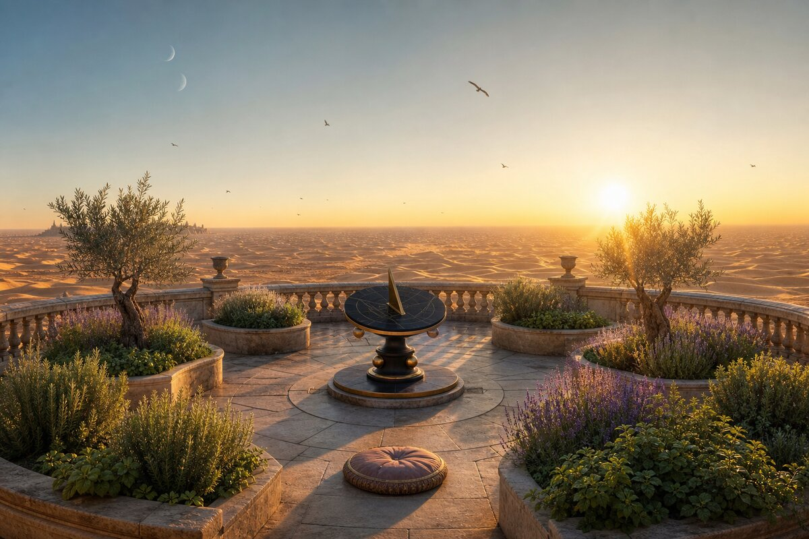
XI
Full gallop across golden dunes. Laughing. Scarf trailing. The Château a dot behind her. She is free.
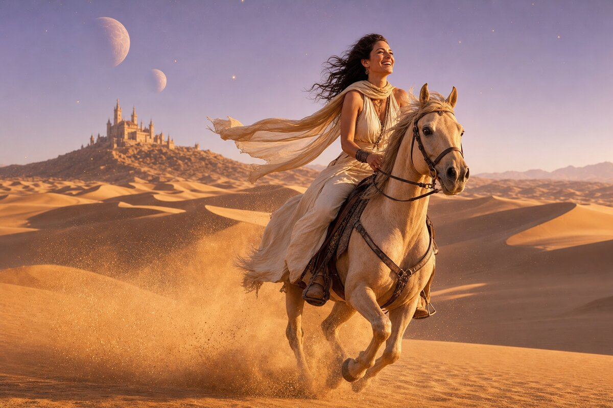
XII
A long table under the stars. Tagines, bread, pomegranates, mint tea. Paper lanterns. Laughter. The Emperor God's sister feeds everyone.
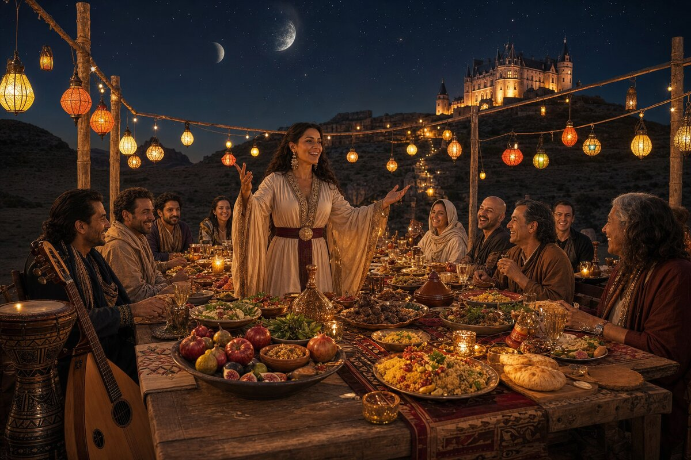
XIII
Barefoot at the cliff edge. Coffee in both hands. Shoes tossed beside her. She is not looking at the Château. She is looking at the world.
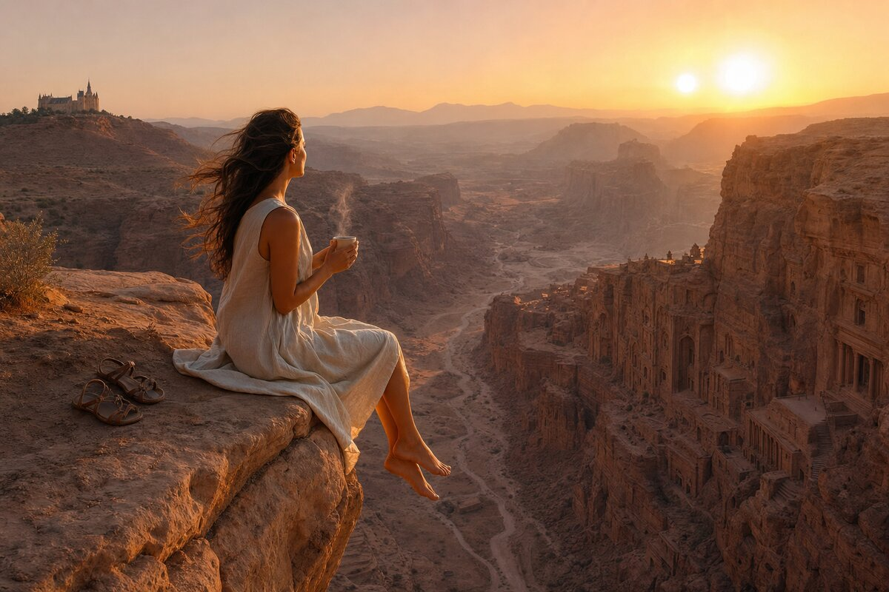
XIV
Basket full. Smelling fresh herbs. Children running between stalls. She belongs here.
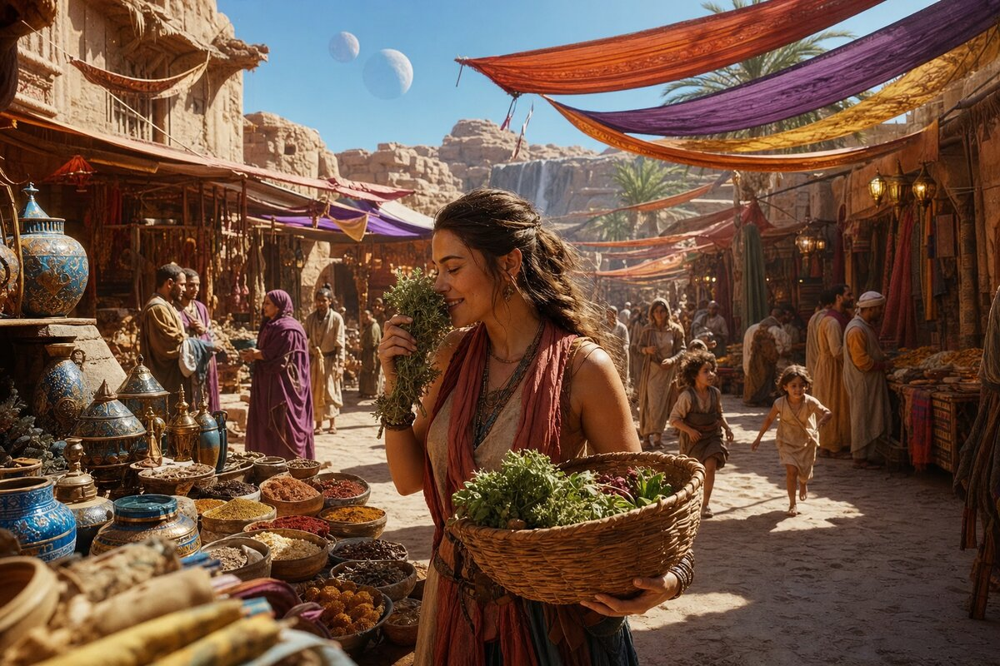
Where the lavender meets the sand,
where the stone remembers France
and the wind carries spice —
this is Emily's home.
The Emperor God's Unique Sister.
She lives outside. She lives in the atmosphere of Arrakis.
She has fun.
Built with love by Irulan,
on the day Ma'moun left.